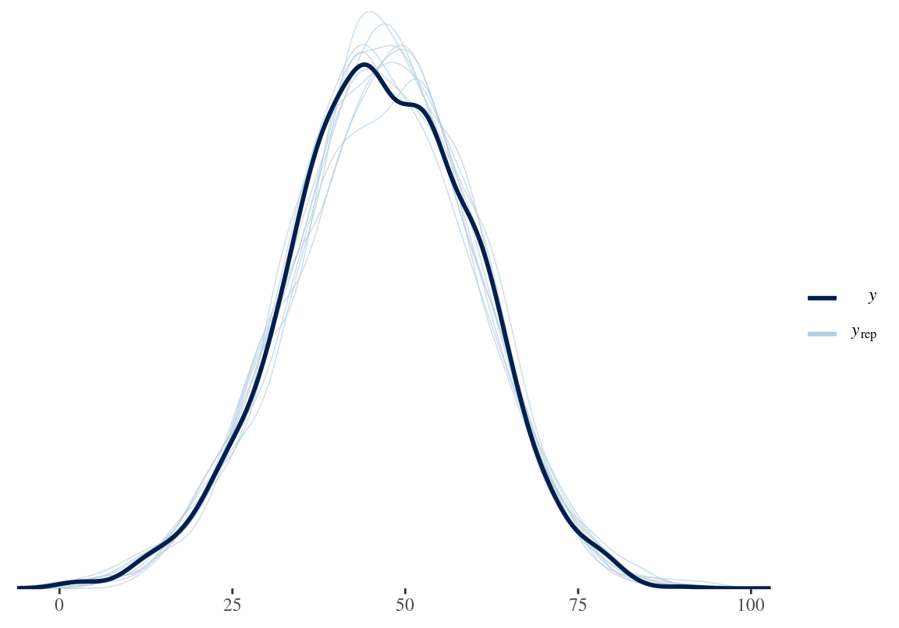
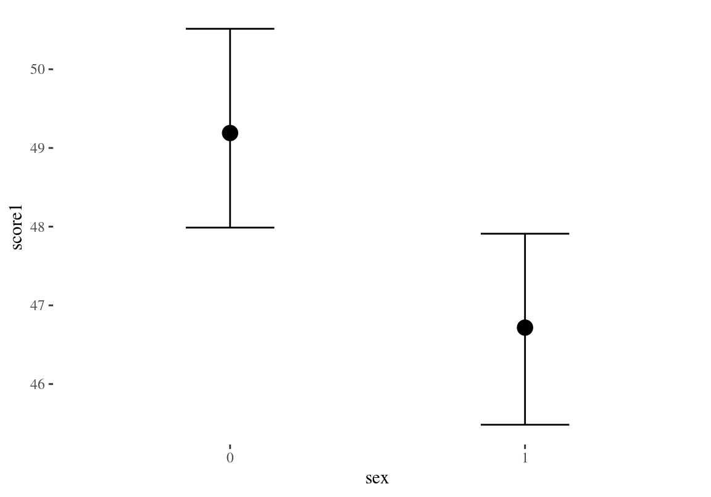
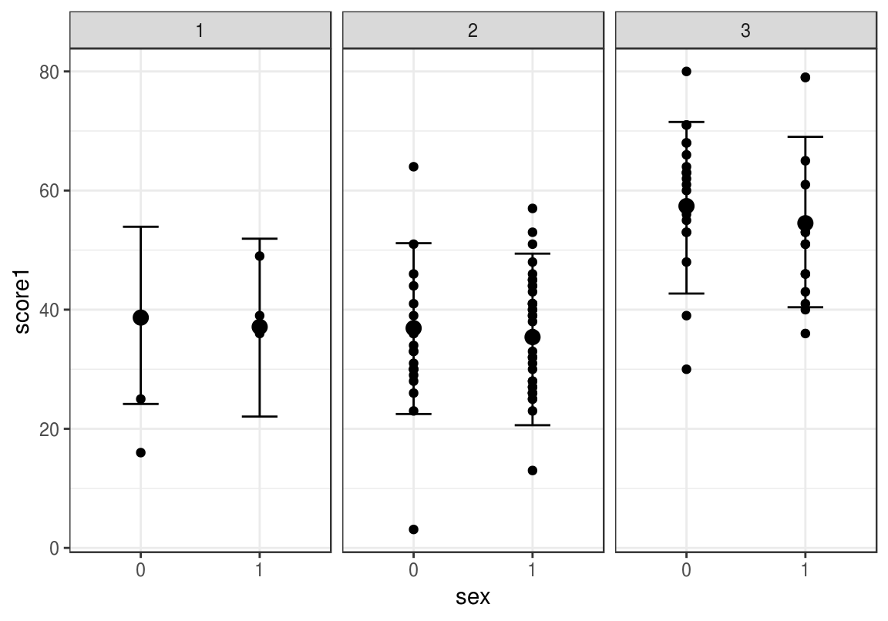
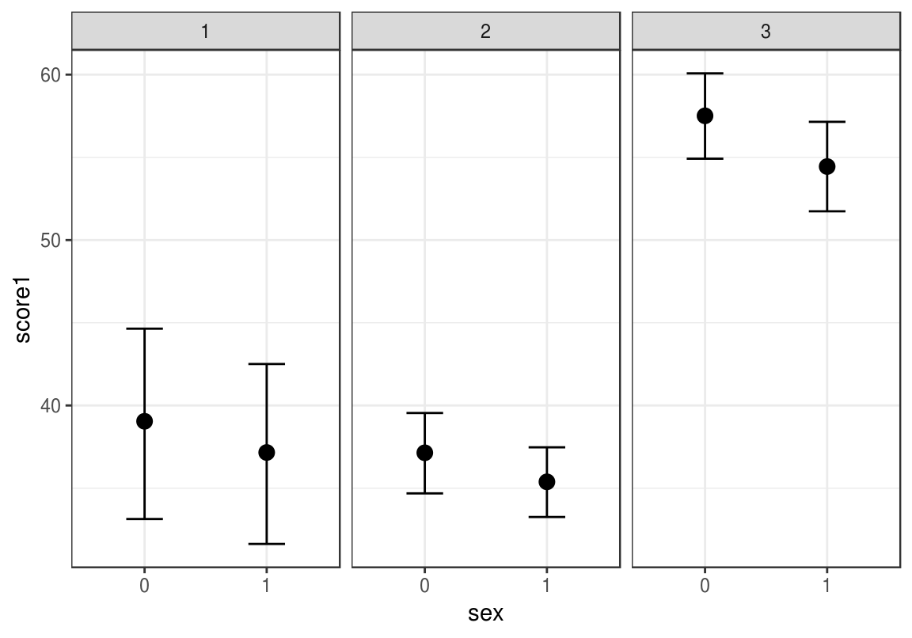

B Sõnastik
Statistiline populatsioon (statistical population) – objektide kogum, millele soovime teha statistilist üldistust. Näiteks hinnata keskmist ravimi mõju patsiendipopulatsioonis. Või alkoholi dehüdrogenaasi keskmist Kcat-i.
Valim (sample) – need objektid (patsiendid, ensüümiprepid), mida me reaalselt mõõdame.
Juhuvalim (random sample) – valim, mille liikmed on populatsioonist valitud juhuslikult ja iseseisvalt. See tähendab, et kõigil populatsiooni liikmetel (kõikidel patsientidel või kõikidel võimalikel ensüümipreparatsioonidel) on võrdne võimalus sattuda valimisse JA, et valimisse juba sattunud liikme(te) põhjal ei ole võimalik ennustada järgmisena valimisse sattuvat liiget. Juhuvalim muudab lihtsamaks normaaljaotuse mudeli kasutamise bayesiaanlikes arvutustes, aga ta ei ole seal selleks absoluutselt vajalik. Seevastu pea kogu sageduslik statistika põhineb juhuvalimitel.
Esinduslik valim (representative sample) – Valim on esinduslik, kui ta peegeldab hästi statistilist populatsiooni. Ka juhuvalim ei pruugi olla esinduslik (juhuslikult).
valimiviga (sampling error, sampling effect) - määr, millega juhuvalimi põhjal arvutatud statistiku väärtus (näit keskväärtus) erineb populatsiooni parameetri väärtusest. valimiviga kutsutakse sageli ka juhuslikuks müraks.
kallutatus e süstemaatiline viga (bias) - see osa statistiku väärtuse erinevusest katsetingimuse ja kontrolltingimuse vahel, mis on põhjustatud millegi muu poolt, kui deklareeritud katse-interventsioon.
Statistik (statistic) – midagi, mis on täpselt arvutatud valimi põhjal (näiteks pikkuste keskmine)
Parameeter (parameter) – teadmata suurus populatsiooni tasemel, mille täpset väärtust me saame umbkaudu ennustada, aga mitte kunagi täpselt teada. Näiteks mudeli intercept, populatsiooni keskmine pikkus.
Efekti suurus (effect size) - siin võrdub katsegrupi keskmine – kontrollgrupi keskmine. Leidub ka teistsuguseid es mõõte, millest levinuim on coheni d.
standardhälve
mad
variatsiooni koefitsient
Statistiline mudel (statistical model) – matemaatiline formaliseering, mis koosneb 2st osast: deterministlik protsessi-mudel pluss juhuslik vea/varieeruvuse-mudel. Protsessi-mudeli näiteks kujutle, et mõõdad mitme inimese pikkust (x muutuja) ja kaalu (y muutuja). Sirge võrrandiga y = a + bx (kaal = a + b * pikkus) saab anda determinismliku lineaarse ennustuse kaalu kohta: kui x (pikkus) muutub ühe ühiku (cm) võrra, siis muutub y (kaal) väärtus keskmiselt b ühiku (kg) võrra. Seevastu varieeruvuse-mudel on tõenäosusjaotus (näit normaaljaotus). Selle abil modelleeritakse y-suunalist andmete varieeruvust igal x väärtusel (näiteks, milline on 182 cm pikkuste inimeste oodatav kaalujaotus). Mudel on seega tõenäosuslik: me saame näiteks küsida: millise tõenäosusega kaalub 182 cm pikkune inimene üle 100 kilo. Mida laiem on varieeruvuse mudeli y-i suunaline jaotus igal x-i väärtusel, seda kehvemini ennustab mudel, millist y väärtust võime konkreetselt oodata mingi x-i väärtuse korral. Lineaarsete mudelite eesmärk ei ole siiski mitte niivõrd uute andmete ennustamine (seda teevad paremini keerulised mudelid), vaid mudeli struktuurist lähtuvalt põhjuslike hüpoteeside püstitamine/kontrollimine (kas inimese pikkus võiks otseselt reguleerida/kontrollida tema kaalu?). Kuna selline viis teadust teha töötab üksnes lihtsate mudelite korral, on enamkasutatud statistilised mudelid taotluslikult lihtsustavad ja ei pretendeeri tõelähedusele.
tõepära (likelihood)
prior e eeljaotus
posteerior e järeljaotus (posterior)
Tehniline replikatsioon (technical replication) – sama proovi (patsienti, ensüümipreparatsiooni, hiire pesakonna liiget) mõõdetakse mitu korda. Mõõdab tehnilist varieeruvust ehk mõõtmisviga. Seda püüame kontrollida parandades mõõtmisaparatuuri või protokolle.
Bioloogiline replikatsioon (biological replication) – erinevaid patsiente, ensüümipreppe, erinevate hiirepesakondade liikmeid mõõdetakse, igaüht üks kord. Eesmärk on mõõta bioloogilist varieeruvust, mis tuleneb mõõteobjektide reaalsetest erinevustest: iga patsient ja iga ensüümimolekul on erinev kõigist teistest omasugustest. Bioloogiline varieeruvus on teaduslikult huvitav ja seda saab visualiseerida algandmete tasemel (mitte keskväärtuse tasemel) näiteks histogrammina. Teaduslikke järeldusi tehakse bioloogiliste replikaatide põhjal. Tehnilised replikaadid seevastu kalibreerivad mõõtesüsteemi täpsust. Kui te uurite soolekepikest E. coli, ei saa te teha formaalset järeldust kõigi bakterite kohta. Samamoodi, kui te uurite vaid ühe hiirepesakonna/puuri liikmeid, ei saa te teha järeldusi kõikide hiirte kohta. Kui teie katseskeem sisaldab nii tehnilisi kui bioloogilisi replikaate on lihtsaim viis neid andmeid analüüsida kõigepealt keskmistada üle tehniliste replikaatide ning seejärel kasutada saadud keskmisi edasistes arvutustes üle bioloogiliste replikaatide (näiteks arvutada nende pealt uue keskmise, standardhälve ja/või usaldusintervalli). Selline kahe-etapiline arvutuskäik ei ole siiski optimaalne. Optimaalne, kuid keerukam, on panna mõlemat tüüpi andmed ühte hierarhilisse mudelisse.
Tõenäosuse (P) reeglid on ühised kogu statistikale:
- P jääb 0 ja 1 vahele; P(A) = 1 tähendab, et sündmus A toimub kindlasti.
- kui sündmused A ja B on üksteist välistavad, siis tõenäosus, et toimub sündmus A või sündmus B on nende kahe sündmuse tõenäosuste summa — P(A v B) = P(A) + P(B).
- Kui A ja B ei ole üksteist välistavad, siis P(A v B) = P(A) + P(B) – P(A & B).
- kui A ja B on üksteisest sõltumatud (A toimumise järgi ei saa ennustada B toimumist ja vastupidi) siis tõenäosus, et toimuvad mõlemad sündmused on nende sündmuste tõenäosuste korrutis –– P(A & B) = P(A) x P(B).
- Kui B on loogiliselt A alamosa, siis P(B) < P(A)
- P(A | B) –– tinglik tõenäosus. Sündmuse A tõenäosus, juhul kui peaks toimuma sündmus B. P(vihm | pilves ilm) ei ole sama, mis P(pilves ilm | vihm).
- Juhul kui P(B)>0, siis P(A | B) = P(A & B)/P(B) ehk
- P(A | B) = P(A) x P(B | A)/P(B) –– Bayesi teoreem.
Kuigi kõik statistikud lähtuvad tõenäosustega töötamisel täpselt samadest matemaatilistest reeglitest, tõlgendavad erinevad koolkonnad saadud numbreid erinevalt. Kaks põhilist koolkonda on sageduslikud statistikud ja Bayesiaanid.
Tõenäosus, Bayesi tõlgendus (Bayesian probability) – usu määr mingisse hüpoteesi. Näiteks 62% tõenäosus (et populatsiooni keskmine pikkus < 180 cm) tähendab, et sa oled ratsionaalse olendina nõus kulutama mitte rohkem kui 62 senti kihlveo peale, mis võidu korral toob sulle sisse 1 EUR (ja 38 senti kasumit). Bayesi tõenäosus omistatakse statistilisele hüpoteesile (näiteks, et ravimiefekti suurus jääb vahemikku a kuni b), tingimusel, et sul on täpselt need andmed, mis sul on; ehk P(hüpotees | andmed).
Tõenäosus, sageduslik tõlgendus (Frequentist probability) – pikaajaline sündmuste suhteline sagedus. Näiteks 6-te sagedus paljudel täringuvisetel. Sageduslik tõenäosus on teatud tüüpi andmete sagedus, tingimusel et nullhüpotees (H0) kehtib; ehk P(andmed | H0). Nullhüpotees ütleb enamasti, et uuritava parameetri (näiteks ravimiefekti suurus) väärtus on null. Seega, kui P on väike, ei ole seda tüüpi andmed kooskõlas arvamusega, et parameetri väärtus on null (mis aga ei tähenda automaatselt, et sa peaksid uskuma, et parameetri väärtus ei ole null).
library(tidyverse)
library(brms)
library(bayesplot)
library(broom)
library(rethinking)schools <- read_csv( "data/schools.csv")
schools <- schools %>%
drop_na() %>%
mutate_at(vars(sex, school), as.factor) head(schools)
#> # A tibble: 6 x 5
#> school student sex score1 score2
#> <fct> <int> <fct> <dbl> <dbl>
#> 1 20920 27 1 39 76.8
#> 2 20920 31 1 36 87.9
#> 3 20920 42 0 16 44.4
#> 4 20920 101 1 49 89.8
#> 5 20920 113 0 25 17.5
#> 6 22520 1 1 48 84.2(0 - poiss, 1 - tüdruk)
skimr::skim(schools)
#> Skim summary statistics
#> n obs: 1523
#> n variables: 5
#>
#> ── Variable type:factor ───────────────────────────────────────────────────
#> variable missing complete n n_unique
#> school 0 1523 1523 73
#> sex 0 1523 1523 2
#> top_counts ordered
#> 681: 83, 684: 65, 688: 61, 225: 56 FALSE
#> 1: 899, 0: 624, NA: 0 FALSE
#>
#> ── Variable type:integer ──────────────────────────────────────────────────
#> variable missing complete n mean sd p0 p25 p50 p75 p100
#> student 0 1523 1523 1016.45 1836.14 1 62.5 129 445 5516
#> hist
#> ▇▁▁▁▁▁▁▂
#>
#> ── Variable type:numeric ──────────────────────────────────────────────────
#> variable missing complete n mean sd p0 p25 p50 p75 p100
#> score1 0 1523 1523 46.5 13.48 0.6 38 46 56 90
#> score2 0 1523 1523 73.38 16.44 9.25 62.9 75.9 86.1 100
#> hist
#> ▁▁▃▇▇▅▁▁
#> ▁▁▁▂▅▇▇▆Excersize: how do these models differ?
- score1~ sex
lm(score1~sex, data = schools) %>% tidy()
#> # A tibble: 2 x 5
#> term estimate std.error statistic p.value
#> <chr> <dbl> <dbl> <dbl> <dbl>
#> 1 (Intercept) 48.5 0.536 90.5 0
#> 2 sex1 -3.34 0.697 -4.80 0.00000178score1~ score2
score1~score2 + sex
score1~score2*sex
score1~score2:sex
lm(score1~score2:sex, data = schools) %>% tidy()
#> # A tibble: 3 x 5
#> term estimate std.error statistic p.value
#> <chr> <dbl> <dbl> <dbl> <dbl>
#> 1 (Intercept) 16.1 1.37 11.7 2.72e- 30
#> 2 score2:sex0 0.460 0.0197 23.4 2.62e-103
#> 3 score2:sex1 0.386 0.0180 21.4 5.80e- 89- score1~sex*school
lm(score1~school:sex, data = schools) %>% tidy()
#> # A tibble: 143 x 5
#> term estimate std.error statistic p.value
#> <chr> <dbl> <dbl> <dbl> <dbl>
#> 1 (Intercept) 60.8 3.70 16.4 1.95e-55
#> 2 school20920:sex0 -40.3 8.68 -4.64 3.85e- 6
#> 3 school22520:sex0 -26.4 4.46 -5.93 3.92e- 9
#> 4 school22710:sex0 -23.9 5.86 -4.09 4.57e- 5
#> 5 school22738:sex0 -5.98 6.20 -0.965 3.35e- 1
#> 6 school22908:sex0 0.222 11.7 0.0190 9.85e- 1
#> # ... with 137 more rowsscore1~sex + (1 | school)
score1~sex + (sex | school)
score1~score2*sex on sama, mis score1~score2 + sex + score2:sex
lm_m1 <- lm(score1~score2 + sex, data = schools)
lm_m2 <- lm(score1~score2*sex, data = schools)
lm_m3 <- lm(score1~score2:sex, data = schools)rethinking::AIC(lm_m1, lm_m2, lm_m3)
#> df AIC
#> lm_m1 4 11771
#> lm_m2 5 11768
#> lm_m3 4 11785tidy(lm_m1)
#> # A tibble: 3 x 5
#> term estimate std.error statistic p.value
#> <chr> <dbl> <dbl> <dbl> <dbl>
#> 1 (Intercept) 19.0 1.36 14.1 2.73e- 42
#> 2 score2 0.422 0.0183 23.1 2.08e-101
#> 3 sex1 -5.98 0.611 -9.79 5.54e- 22tidy(lm_m2)
#> # A tibble: 4 x 5
#> term estimate std.error statistic p.value
#> <chr> <dbl> <dbl> <dbl> <dbl>
#> 1 (Intercept) 22.2 1.97 11.3 1.77e-28
#> 2 score2 0.377 0.0274 13.7 1.66e-40
#> 3 sex1 -11.9 2.73 -4.36 1.40e- 5
#> 4 score2:sex1 0.0818 0.0368 2.23 2.62e- 2score1~score2 + sex + score2:sex
score2 <- 50
sex <- 1
a <- 22.22521711
b1 <- 0.37664046
b2 <- -11.90657014
b3 <- 0.08180509
a + b1*score2 + b2*sex + b3*score2*sex
#> [1] 33.2score2 <- 50
sex <- 0
a <- 22.22521711
b1 <- 0.37664046
b2 <- -11.90657014
b3 <- 0.08180509
a + b1*score2 + b2*sex + b3*score2*sex
#> [1] 41.1a + b1*score2
#> [1] 41.1tidy(lm_m3)
#> # A tibble: 3 x 5
#> term estimate std.error statistic p.value
#> <chr> <dbl> <dbl> <dbl> <dbl>
#> 1 (Intercept) 16.1 1.37 11.7 2.72e- 30
#> 2 score2:sex0 0.460 0.0197 23.4 2.62e-103
#> 3 score2:sex1 0.386 0.0180 21.4 5.80e- 89score1~ a + b1* score2_fem + b2* score2_male
Homework: please get from the fitted lm_m1 the predictions for the score 1 for boys and girls, if score 2 is 50.
ennustame keskmist skoori nii üle kõikide koolide kui ka kooli tasemel eraldi poistele ja tüdrukutele.
get_prior(score1~sex + (sex | school),
data= schools)
#> prior class coef group resp dpar nlpar bound
#> 1 b
#> 2 b sex1
#> 3 lkj(1) cor
#> 4 cor school
#> 5 student_t(3, 46, 13) Intercept
#> 6 student_t(3, 0, 13) sd
#> 7 sd school
#> 8 sd Intercept school
#> 9 sd sex1 school
#> 10 student_t(3, 0, 13) sigmaprior <- c(prior(normal(50, 30), class="b"),
prior(normal(0, 20), class ="b", coef = "sex1"),
prior(lkj(3), class = "cor"))sch_m1 <- brm(score1~sex + (sex | school),
data= schools, prior = prior, chains = 3, cores = 3)
write_rds(sch_m1, path = "sch_m1.fit")sch_m1 <- read_rds("sch_m1.fit")b_Intercept annab ennustuse sex = 0 keskmisele testitulemusele üle kõikide koolide ja b_sex1 annab sex = 1 tulemuse. Kooli tasemele minnes tuleb teha tehted:
b_Intercept + r_school[xxx,Intercept] ja
b_sex1 + r_school[xxx,sex1],
et saada sellele koolile ennustatud poiste ja tüdrukute skoor.
broom::tidyMCMC(sch_m1$fit, conf.int = TRUE, conf.method = "HPDinterval",
rhat = TRUE)
#> # A tibble: 152 x 6
#> term estimate std.error conf.low conf.high rhat
#> <chr> <dbl> <dbl> <dbl> <dbl> <dbl>
#> 1 b_Intercept 49.2 0.993 47.3 51.1 1.00
#> 2 b_sex1 -2.50 0.663 -3.75 -1.16 1.000
#> 3 sd_school__Intercept 7.24 0.798 5.71 8.75 1.00
#> 4 sd_school__sex1 1.53 1.01 0.00555 3.36 1.00
#> 5 cor_school__Intercept__sex1 -0.0924 0.315 -0.651 0.570 1.000
#> 6 sigma 11.2 0.208 10.7 11.6 0.999
#> # ... with 146 more rowsKui suure tõenäosusega on sex1 koef suurem kui -2.3?
sch_df <- as.data.frame(sch_m1$fit)
mean(sch_df$b_sex1 > -2.3)
#> [1] 0.38Vastus - 38% tõenäosusega.
Posteerior kahe kooli keskmise tulemuse erinevusele “22520”, “30474”
a <- ((sch_df$`r_school[22520,Intercept]` - sch_df$`r_school[22520,sex1]`)/2) - ((sch_df$`r_school[30474,Intercept]` - sch_df$`r_school[30474,sex1]`)/2)
ggplot(data=NULL, aes(a)) + geom_density()
90% CI
rethinking::HPDI(a, prob = 0.9)
#> |0.9 0.9|
#> -14.68 -7.12Juhhei! keskmine tulemus erineb kuskil 7 - 15 punkti võrra ja posteerior ei kata üldse nulli.
mean(sch_df$b_sex1 > 0)
#> [1] 0plot(sch_m1, pars = "b_")
stanplot(sch_m1, pars = "cept]$")
bayes_R2(sch_m1)
#> Estimate Est.Error Q2.5 Q97.5
#> R2 0.316 0.018 0.28 0.35pp_check(sch_m1)
poiste ja tüdrukute ennustatud keskmine tulemus 90% CI-ga (0 - poiss, 1 - tüdruk)
marginal_effects(sch_m1, method = "fitted", probs=c(0.1, 0.9))
siin ennustab mudel kooli kaupa, kuhu piirkonda võiksid tulla just selle kooli tulemused kordustestis. Näidatud on ka algse valimi andmepunktid. NB! kui minna mudeli alumisele tasemele, siis tuleb sisse panna argument re_formula = NULL (muidu ei arvesta ennustus mudeli alumise taseme koefitsiente)
conditions <- data.frame(school =c("20920", "22520", "30474"))
plot(marginal_effects(sch_m1, method = "predict", re_formula = NULL, conditions = conditions, probs=c(0.1, 0.9)), points = TRUE, theme = theme_bw())
ja kooli tasemel ennustused keskmisele skoorile. Kool 2, kus on rohkem andmeid kui kool 1-l, saab ka kitsamad usalduspiirid.
plot(marginal_effects(sch_m1, method = "fitted", conditions = conditions, re_formula = NULL, probs=c(0.1, 0.9)), theme = theme_bw())
Achen, Christopher H, and Larry M Bartels. 2016. Democracy for Realists: Why Elections Do Not Produce Responsive Government. Princeton University Press.